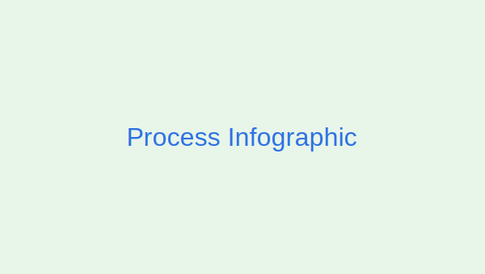
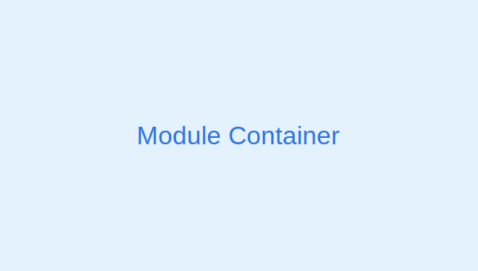

Circular bio-manufacturing & analytical science


On-site Azolla cultivation removes nutrients + CO₂ → extracts become omega‑3 oils, proteins & green carbon.
On-site Azolla cultivation removes nutrients + CO₂ → extracts become omega‑3 oils, proteins & green carbon.
Nicolet iN10-MX – 50 µm mapping of defects, polymers & thin films.
Agilent Cary 5000 (175–3300 nm) with integrating sphere; color & band-gap.
Perkin Elmer system for evolved-gas analysis, outgassing & purity.
Thermo K-Alpha for 0-10 nm surface chemistry & adhesion failure.
Sign in to get a quote & keep history.